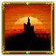
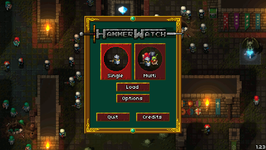
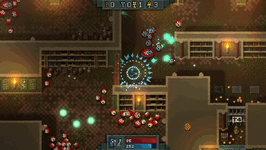
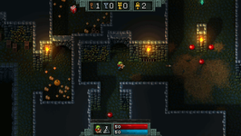
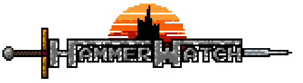

Hammerwatch
Dieser Artikel wurde für die folgenden Ubuntu-Versionen getestet:
Ubuntu 14.04 Trusty Tahr
Zum Verständnis dieses Artikels sind folgende Seiten hilfreich:
 In diesem von der Gauntlet-Videospielreihe und anderen Genreklassikern inspirierten Hack-'n'-Slay-Spiel kämpft sich der Held bis zur Spitze von Burg Hammerwatch empor, um einen uralten Drachen zu töten. Der Spieler kann bei der Charaktererstellung zwischen den Klassen Paladin, Zauberer, Waldläufer, Dieb, Hexenmeister und Priester wählen, die jeweils unterschiedliche Waffen und Spezialfähigkeiten beherrschen. Bei Händlern können Verbesserungen für ihre Fähigkeiten erworben werden.
Bis zu drei Spieler können die Herausforderung sowohl lokal als auch über das Internet zusammen im Koop-Modus annehmen. Eine Grafikkarte mit funktionierender 3D-Beschleunigung ist erforderlich.
Spieldateien beziehen¶
Das Spiel kann im Humble Store, bei Steam oder bei GOG.com erworben werden.
|  |
| Spiel-Menü |
|  |
| Der Held nimmt es mit Monstern auf… |
|  |
| …und findet wertvolle Gegenstände. |
Installation¶
Wer das Spiel nicht in Steam erworben hat, muss das Spiel zunächst installieren.
Humble Store¶
Zunächst lädt man das ZIP-Archiv namens hammerwatch_linuxVERSION.zip herunter und entpackt [1] es in ein beliebiges Verzeichnis (sinnvollerweise in ~/Spiele oder mit Root-Rechten [2] in /opt, wie in dieser Anleitung angenommen). Diese Version des Spiels liefert keinen Programmstarter mit, sondern wird im Spielverzeichnis über ein Terminalfenster [3] mit folgendem Befehl gestartet:
RunHammerwatch
Ein Programmstarter [4] kann allerdings leicht selbst erstellt werden. Dazu öffnet man einen Texteditor [5] und fügt die folgenden Zeilen dort ein:
[Desktop Entry] Name=Hammerwatch GenericName=Hack 'n' Slash Comment=Kampf aus den Verliesen von Burg Hammerwatch bis hinauf in die Schatzkammer des Drachen Exec="/opt/Hammerwatch/RunHammerwatch" Icon=/opt/Hammerwatch/hammerwatch-logo.png Path=/opt/Hammerwatch Terminal=false Type=Application Categories=Game;
Die Datei speichert man als ~/.local/share/applications/hammerwatch.desktop oder für alle Benutzer auffindbar mit Root-Rechten als /usr/share/applications/hammerwatch.desktop – spätestens nach einer Neuanmeldung wird das Programm über die gängigen Programmsuchen gefunden. Wer einen Programmstarter auf der Arbeitsfläche sehen möchte, speichert die Datei als ~/Arbeitsfläche/hammerwatch.desktop und macht sie ausführbar [6]. Da noch ein Programm-Icon fehlt, lädt man die Bilddatei hammerwatch-logo.png  herunter und speichert sie im Hammerwatch-Spielverzeichnis, zum Beispiel als /opt/Hammerwatch/hammerwatch-logo.png.
herunter und speichert sie im Hammerwatch-Spielverzeichnis, zum Beispiel als /opt/Hammerwatch/hammerwatch-logo.png.
GOG.com¶
Wer sich für die GOG.com-Version entschieden hat, kann zwischen einem DEB-Paket und einem Archiv wählen. Wenn man das Spiel mit dem DEB-Paket installiert [7], werden die Spieldateien ins Verzeichnis /opt/GOG Games/Hammerwatch kopiert und ein Programmstarter automatisch angelegt.
Alternativ kann man das TAR-Archiv herunterladen und in ein beliebiges Verzeichnis entpacken (zum Beispiel ~/Spiele, wie im Folgenden angenommen) – in diesem Fall startet man das Spiel mit dem folgenden Befehl im Terminal:
~/Spiele/Hammerwatch/game/RunHammerwatch
Natürlich kann man mit diesem Wissen einen eigenen Programmstarter anlegen (vgl. den vorigen Abschnitt).
Level-Editor¶
Der Level-Editor liegt im Verzeichnis Hammerwatch/editor (Steam und Humble Store) bzw. Hammerwatch/game/editor (GOG.com), funktioniert jedoch erst nach der vollständigen Installation [8] von Mono:
mono-complete (universe)
 mit apturl
mit apturl
Paketliste zum Kopieren:
sudo apt-get install mono-complete
sudo aptitude install mono-complete
Danach kann der Editor wie folgt im Terminal gestartet werden [6] – der Pfad zum Spielverzeichnis muss noch angepasst werden (z. B. /opt/GOG Games/Hammerwatch oder ~/Spiele/Hammerwatch):
cd PFAD/ZUM/SPIELORDNER mono game/editor/HammerEditor.exe
Steuerung¶
Das Spiel unterstützt Controller.
| Tastenkürzel | |
| Taste(n) | Funktion |
 | Steuerung |
| ↑ | Angreifen |
| ← | Fähigkeit 1 |
| → | Fähigkeit 2 |
| ↓ | Fähigkeit 3 |
| P | Heiltrank trinken |
| Tab ⇆ | Karte |
| Strg links | Dauerfeuer an-/ausschalten |
| ⇧ links | Position halten |
| Bombe legen | |
| Esc | Menü |

Infobox¶
| Hammerwatch | |
| Genre: | Action, Hack 'n' Slay |
| Sprache: |  |
| Veröffentlichung: | 12. August 2013 |
| Entwickler: | Crackshell |
| Systemvoraussetzungen | 300 MB Festplattenspeicher, 1,8-GHz-Prozessor, 1 GB RAM, OpenGL-1.4-fähige Grafikkarte |
| Medien: | Download |
| Läuft mit: | nativ |

Links¶
Hammerwatch.com
– Offizielle WebsiteHammerwatch – Humble Store
Hammerwatch – Steam
Hammerwatch – GOG.com
Hammerwatch – Wikipedia-Artikel
- Erstellt mit Inyoka
-
 2004 – 2017 ubuntuusers.de • Einige Rechte vorbehalten
2004 – 2017 ubuntuusers.de • Einige Rechte vorbehalten
Lizenz • Kontakt • Datenschutz • Impressum • Serverstatus -
Serverhousing gespendet von